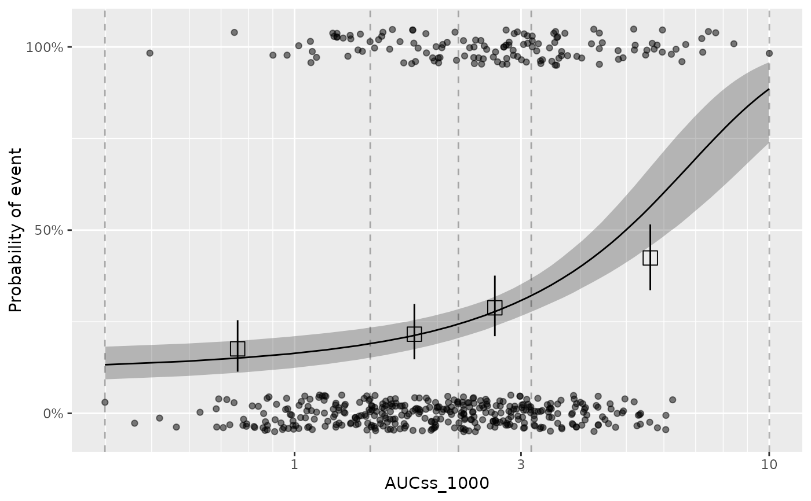

Plot ER model simulations
plot_er.RdPlot ER model simulations
Usage
plot_er(x, ...)
# S3 method for class 'ersim_med_qi'
plot_er(
x,
show_orig_data = FALSE,
show_coef_exp = FALSE,
show_caption = FALSE,
options_orig_data = list(),
options_coef_exp = list(),
options_caption = list(),
...
)
# S3 method for class 'ersim'
plot_er(
x,
show_orig_data = FALSE,
show_coef_exp = FALSE,
show_caption = FALSE,
options_orig_data = list(),
options_coef_exp = list(),
options_caption = list(),
qi_width_sim = 0.95,
...
)
# S3 method for class 'ermod'
plot_er(
x,
show_orig_data = FALSE,
show_coef_exp = FALSE,
show_caption = FALSE,
options_orig_data = list(),
options_coef_exp = list(),
options_caption = list(),
n_draws_sim = if (marginal) 200 else NULL,
seed_sample_draws = NULL,
marginal = FALSE,
exposure_range = NULL,
num_exposures = 51,
qi_width_sim = 0.95,
...
)Arguments
- x
an object of class
ermod,ersim,ersim_med_qi, or their subclasses- ...
currently not used
- show_orig_data
logical, whether to show the data points in the model development dataset. Default is
FALSE. Only support plotting with data that was used in the model development. If you want to use other data, consider adding geom_point() to the plot manually.- show_coef_exp
logical, whether to show the credible interval of the exposure coefficient. Default is
FALSE. This is only available for linear and linear logistic regression models.- show_caption
logical, whether to show the caption note for the plot. Default is
FALSE.- options_orig_data
List of options for configuring how original data is displayed. Possible options include:
add_boxplot: Logical, whether to add a boxplot of exposure values. Default isFALSE.boxplot_height: Height of the boxplot relative to the main plot. Default is0.15.show_boxplot_y_title: Logical, whether to show the y-axis title for the boxplot. Default isTRUE.var_group: The column to use for grouping data for plotting. If specified, observed data points and boxplot will be grouped and colored by this column. Default isNULL.n_bins: Number of bins to use for observed probability summary. Only relevant for binary models. Default is4.qi_width: Width of the quantile interval (confidence interval) for the observed probability summary. Only relevant for binary models. Default is0.95.
- options_coef_exp
List of options for configuring how the exposure coefficient credible interval is displayed. Possible options include:
qi_width: Width of the quantile interval (credible interval) for the exposure coefficient. Default is0.95.n_sigfig: Number of significant figures to display. Default is3.pos_x: x-coordinate of the text label. IfNULL(default), it is set to the minimum value for the exposure variable.pos_y: y-coordinate of the text label. IfNULL(default), it is set to 0.9 for logistic regression models and the maximum value of the response variable in the original data for linear regression models.size: Size of the text label. Default is4.
- options_caption
List of options for configuring the caption note. Possible options include:
orig_data: Logical, whether to show the caption note for the observed data. Default isFALSE.orig_data_summary: Logical, whether to show the caption note for the observed data summary. Default isFALSE. Only relevant for binary models.coef_exp: Logical, whether to show the caption note for the exposure coefficient credible interval. Default isFALSE.
- qi_width_sim
Width of the quantile interval to summarize simulated draws.
- n_draws_sim
Number of draws to simulate response for each exposure value. Set to NULL to use all draws in the model object. Default is NULL unless marginal is set to TRUE (in that case 200 by default to reduce computation time).
- seed_sample_draws
Seed for sampling draws. Default is NULL.
- marginal
logical, whether to use marginal ER simulation. Default to
FALSE. Need to set toTRUEif the model has covariates for the plot to work.- exposure_range
Only relevant when the input x is an
ermodobject. Range of exposure values to simulate. If NULL (default), it is set to the range of the exposure variable in the original data for model development.- num_exposures
Only relevant as with
exposure_range. Number of exposure values to simulate.
Details
Plotting with ermod is done with some default values. If they are not
suitable, you can always perform the simulation manually and use
plot_er() on the simulated data.
Examples
data(d_sim_binom_cov_hgly2)
ermod_bin <- dev_ermod_bin(
data = d_sim_binom_cov_hgly2,
var_resp = "AEFLAG",
var_exposure = "AUCss_1000"
)
ersim_med_qi <- sim_er_curve(
ermod_bin,
output_type = "median_qi"
)
plot_er(ersim_med_qi, show_orig_data = TRUE) +
xgxr::xgx_scale_x_log10()
